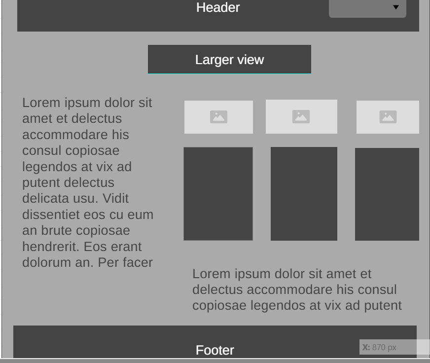

Site Name
I like the name Travel log media, because I feel like it's a name not used on other travel log sites
Site Purpose
I will include random upcoming trips, that will help the user experience more interesting along with certain
Scenarios
I will include the following questions:
Color schema
I will just keep the color to white and black- but with more shading on the pictures and paragraphs
Typography
I will use my favorite font: Noto sans
Wireframe
